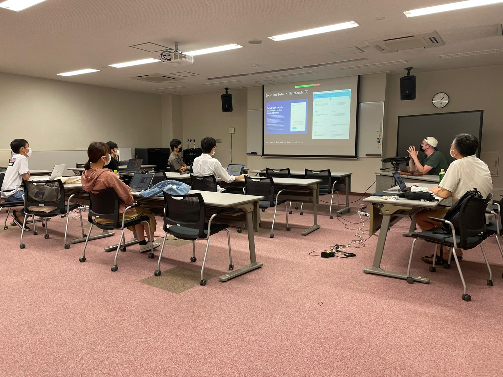
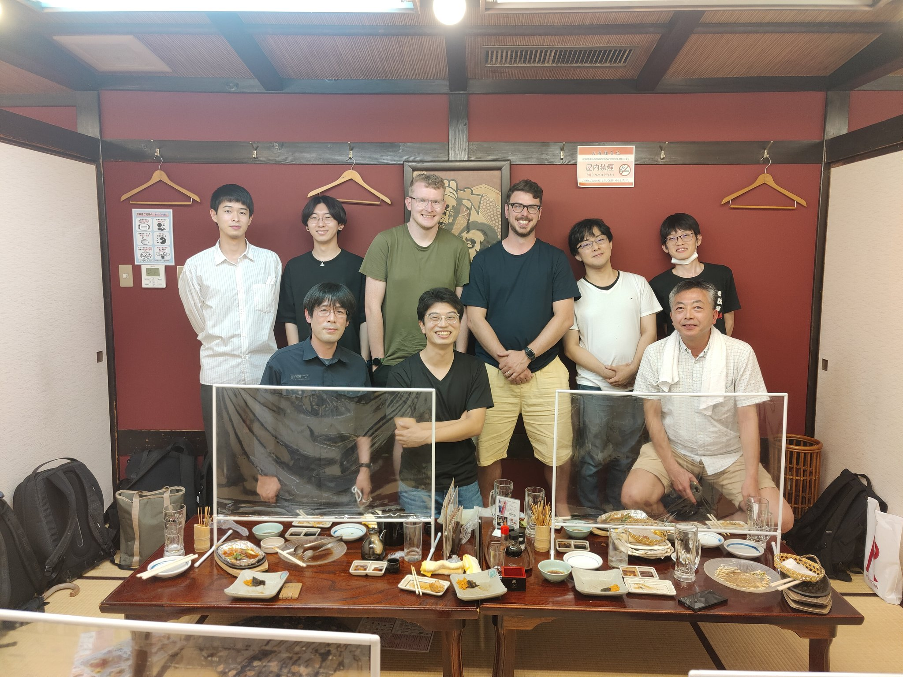

Japan Research Visit - September 2022
Ritsumeikan University, Kyoto, Japan
“Geographic Data Science for Urban Analytics”
A five day short course on the use of new forms of data to study cities, grounding students in the basic principles of Geographic Data Science.
From the 5th - 9th September, Prof. Alex Singleton and I visited Prof. Keiji Yano and his students at Ritsumeikan University, to deliver a five-day short course on Geographic Data Science for Urban Analytics.
The course, co-taught by both of us, consisted of morning lectures on topics such as city structure and function, new forms of data and the analysis of cities and geographic data science for urban analytics, followed by afternoon practicals taught in R which built from basic R programming to mapping areas and context and visualizing point patterns.
We finished the week with a series of student presentations on a short group project that they had each carried out, where we awarded prizes to the excellent students.
We had a fantastic week, and it was my first trip to Japan so managed to get lots of exploring done!
Photos


More Information
The full week itinerary is available to view, which details a day-by-day itinerary of what was delivered across the short course.